Branch
wawa was initially opened by shiva khatri and his friend in his house in bhaktapur,Nepal.But now it is spread over many cities of nepal. it has gained a lot of popularity in very short period of time. it has opened its branches in following cities and it is soon opening its branches in every nook and corner of the country and perhaps it may go global.
1. Kathmandu
2. Pokhara
3. Butwal
4. Bharatpur
5. Dharan
7. Janakpur
8. Hetauda
9. Birgunj
10. Tansen
 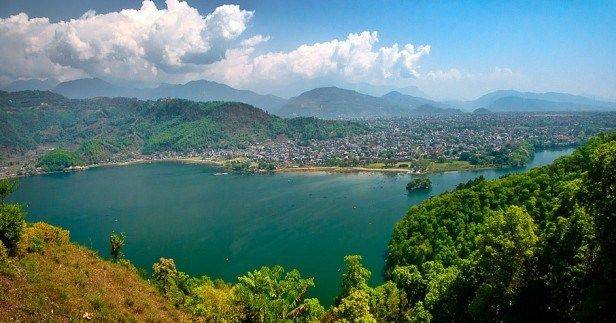
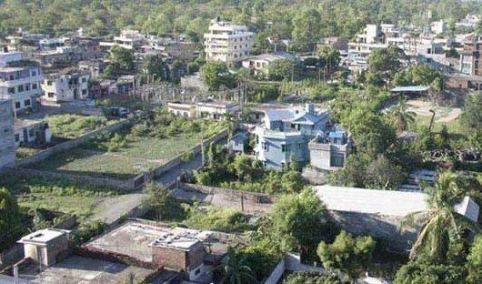
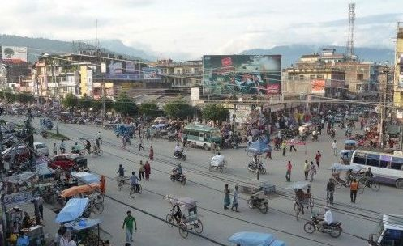
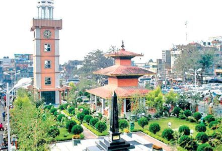
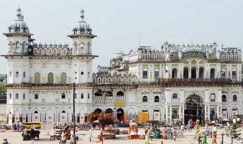
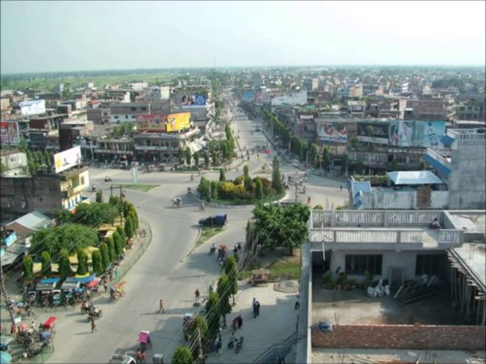
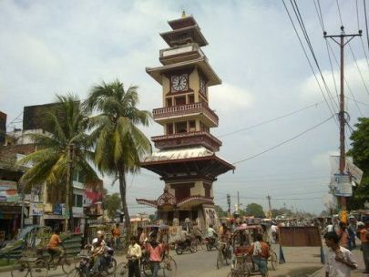
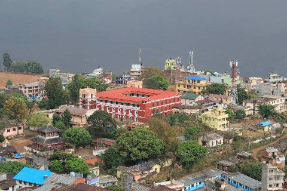
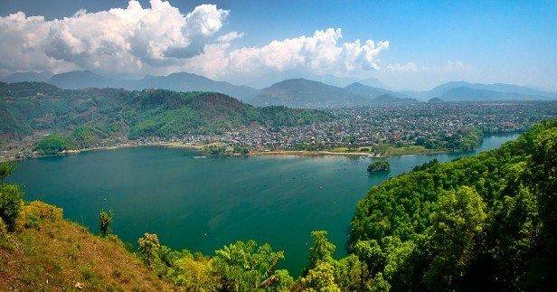
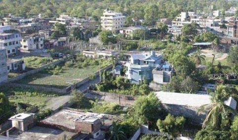
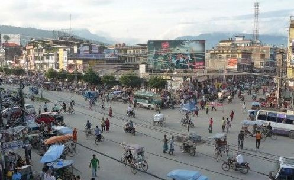
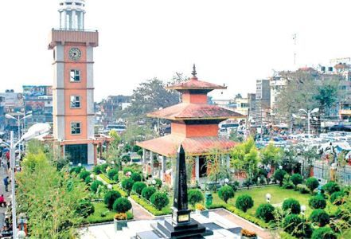
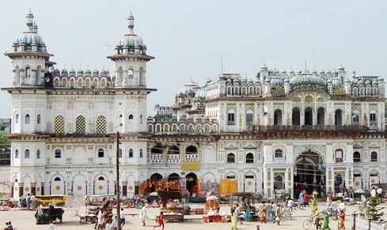
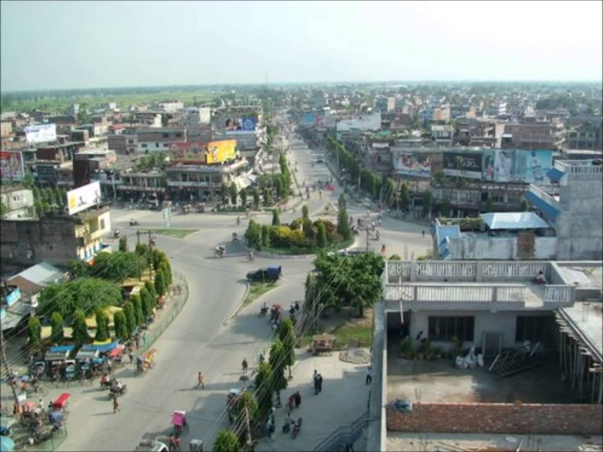
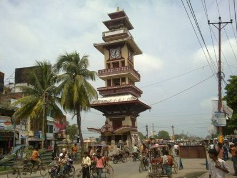
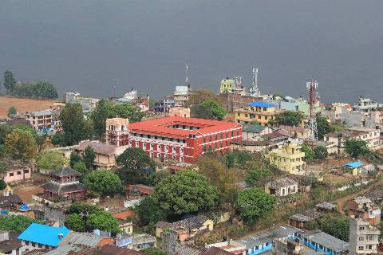